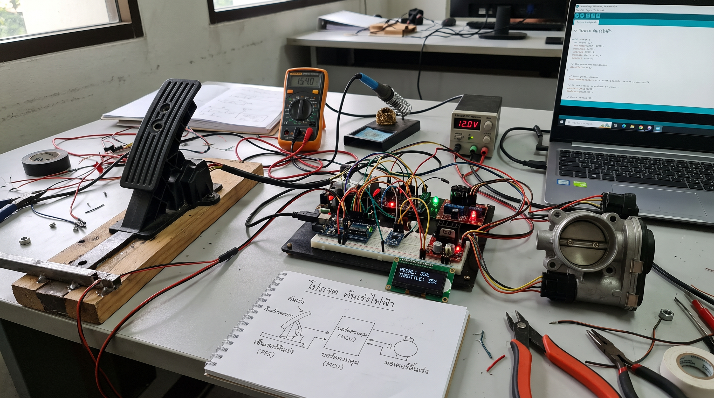
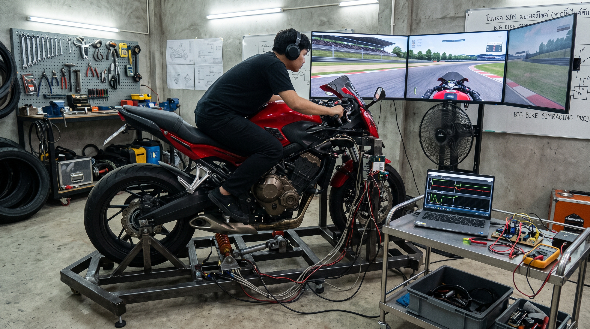
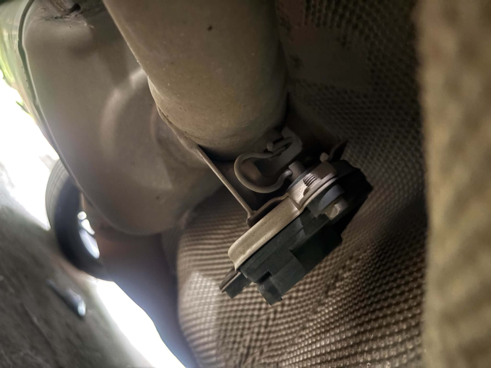

คันเร่งไฟฟ้า จาก esp32
ลิ้งค์ตัวอย่างโปรเจค: YT
Programmable Throttle By Wire (คันเร่งไฟฟ้าแบบกำหนดแมพได้) ฟีเจอร์: ยกเลิกสายสลิง เปลี่ยนเป็นการอ่านค่าเซนเซอร์แล้วส่งผ่าน CAN Bus ไปสั่งสเต็ปเปอร์มอเตอร์คุมลิ้นปีกผีเสื้อ สิ่งที่ผู้ใช้ได้รับ: สามารถปรับ "Riding Modes" ได้อิสระ เช่น โหมด Rain (บิดคันเร่งลึก แต่ลิ้นเปิดช้าๆ เพื่อกันล้อสไลด์) หรือ โหมด Track (บิดนิดเดียว ลิ้นเปิด 100% ดึงหน้าหงาย) รถจะตอบสนองเข้ากับสไตล์การขี่และสภาพถนนได้ทันทีโดยไม่ต้องไปยุ่งกับเครื่องยนต์ 2. Seamless Quickshifter & Auto-Blip (เปลี่ยนเกียร์โดยไม่เสียกำลัง) ฟีเจอร์: ระบบทำงานร่วมกับคันเร่งไฟฟ้าเพื่อตัดการจุดระเบิด (Up-shift) หรือสั่งเบิ้ลเครื่องยนต์อัตโนมัติ (Down-shift) ให้รอบสัมพันธ์กันพอดีเมื่อเซนเซอร์เกียร์ถูกกระตุ้น สิ่งที่ผู้ใช้ได้รับ: อัตราเร่งต่อเนื่องไม่มีสะดุด (Seamless Acceleration) ไม่ต้องเสียเวลากำคลัตช์ยกคันเร่ง ช่วยลดเวลาต่อรอบ (Lap time) และลดอาการล้อหลังล็อคหรือท้ายสะบัดเวลาเชนจ์เกียร์ลงหนักๆ
simracing จากรถจริงๆ
ลิ้งค์ตัวอย่างโปรเจค: YT

โปรเจคนี้สร้างขึ้นเพื่อทำ simracing ใช้งานเองด้วยงบประหยัด โดยเกมที่เราจะใช้ทดสอบกันคือride3,ride4 เริ่มโดยใช้ปุกกรณ์เพียงไม่กี่อย่าง เช่น rasberry pico, mpu6050(เซนเซอร์วัดองศาเอียง),คันเร่งไฟฟ้า,โมเดลรถจริงๆ,และอื่นๆอีกนิดหน่อย

เซอร์โวท่อเงียบ
โปรเจคนี้เป็นการพัฒนาเซอร์โวท่อเงียบสำหรับรถจักรยานยนต์ โดยใช้เทคโนโลยีใหม่ๆ ในการลดเสียงรบกวนและเพิ่มประสิทธิภาพการทำงานของเครื่องยนต์ แถมสามารถหลบตำรวจได้อีกด้วย